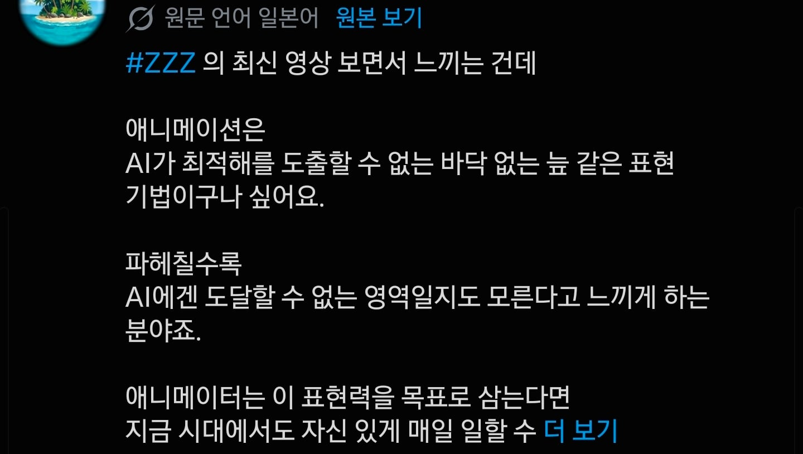
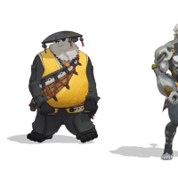
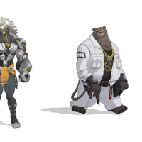

준
섹
얘들아 3년 동안 수고했고 나중에 웃으면서 보자
스
식
에이 개쩌는건 맞지만 AI는 결국 해낼걸
ai가 애니메이팅의 완급과 손끝에서 발끝까지 디테일하게 컨트롤할 시점이면 ai가 이미 가치판단을 하고 있는 시점이라고 봐도 무방함.
특이점은 온다
저것도 학습시키면 금방인거아녀??
귀엽다
한달뒤면 ai가 만들고 있을듯
찢이 뭔데
와 겨!
AI가 어떤식으로 굴러가는지 모르나보네
지 pv보다 남 pv에서 더 쫀쫀한 다이아린.....
어흐 겨봐라
ZZZ라서 ㅈㅈㅈ=찢이 된거임?
ㅇㅇ 맞음 ㅋㅋㅋ
귤❗️복❗️복❗️살❗️려❗️내❗️
크아악 완장!
선은 왜그어논건데 미술쪽은 문외한이라 모르겠어
크크큭 선이보인다
미호요가 붕3때부터 애니에 많이 투자하긴 했지
뭔말임 저게 pv를 ai로만들어서 무성의하다는건임?
이런애들 특징이 막상하게되면 또 인정안하고 다른거 계속가져옴
찢보고 있으면 모델하나는 기깔나게 쫀득함ㄹㅇ
ㅋㅋ아니 어떤 분야든 이건 ai가 절대 대체못해 이러는놈들보면 걍 존나 애잔하네
AI 나와도 미술 분야는 절대 따잇 안당한다고 사람들이 입을 모아 말했는데 제일 먼저 따잇 당해놓고 아직도 정신 못차렸네 ㅋㅋ
꼴림의 미학에 대해 이야기하고 있는데 윗댓애들 기술력이랑 헷갈리는건가
인공신경망이 곧 인간의 뇌 신경과 원리가 똑같아서 인간이 학습 할 수 있는건 ai도 이론상 전부 가능한데.. 아직 잘 모르나봐

역동적인거 ai가 더 잘만듬 ㅅㄱ
찢?ㅋㅋㅋㅋㅋㅋ
예?
그냥 잘만든 pv고 딱히 특별한거 없지않나? 결국 다 할걸
정작 저 댓글 쓴 양반도 왜 대체불가인지는 말 못하고 바닥없는 늪같은 추상적인 소리만 하네
겨드랑이 존나좋네
이것도 다 자료가되서 만들수있게 되겠지 ㅋㅋ
아무튼 겨드랑이 좋네..
3d가 눈에 보이는거랑 모델링이 진짜 너무 달라서 힘들긴한데 이 영상보고 이렇게 만들어줘, 라고하면 못하겠지만
저 모델링한 파일을 가진 사람이 넣어서 학습 시키면... 사람이 배우고 기술이 이전되듯이 ai도 결국 배움


승희는 고민중..
젠존제 모델링이랑 카메라구도 진짜 꼴리게 잘 만들더라...
쇼츠 알고리즘에 얘네들 액션 슬로우모션이 사라지질 않음 ㅋㅋㅋ
안될리가있나 저거 예시로 가져다주고 뽑아달라할듯
안된다고 하던거 예외없이 다 따이는 중 ㅋㅋㅋ
아직도 ai로 대체 못한다는 헛된 희망을 가지고 있네ㅋㅋㅋ
젠존제 pv들이 시점 잡는게 엄청 세련되긴 함
피닉스 뽑아야징
엄